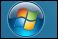
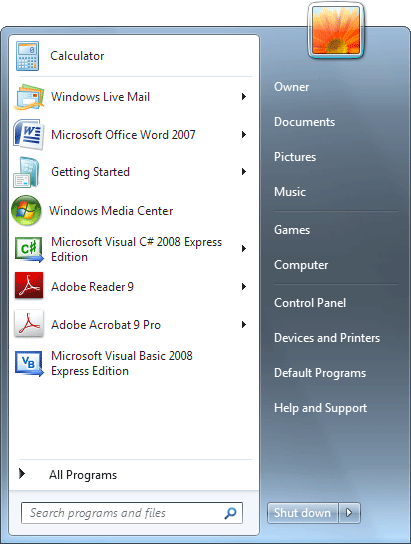
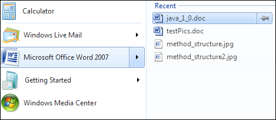
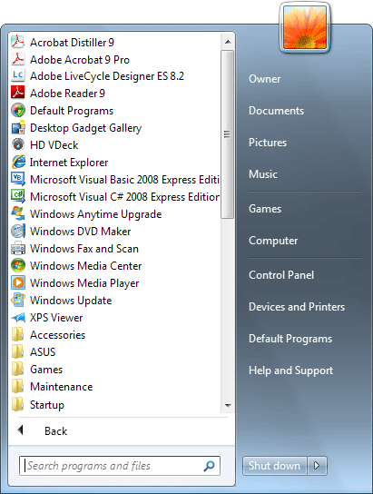
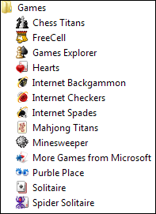
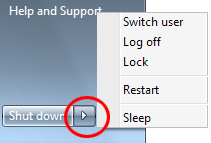
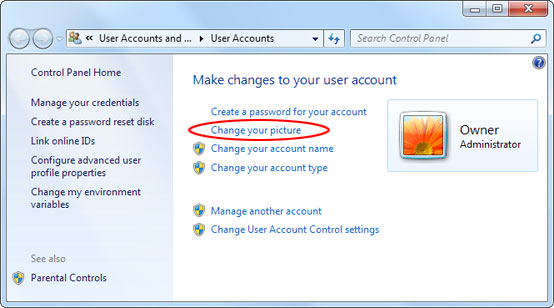
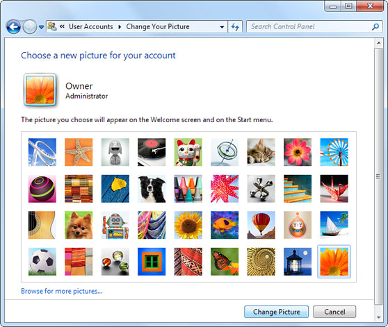
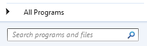
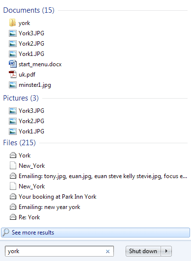

Free
computer Tutorials
|
Free
computer Tutorials
|
|
 back back |
Stay at Home and Learn | ||||
The Windows 7 Start ButtonArguably, the most important part of the Taskbar is the Start button.
The Start button is where a lot of the action takes place in Windows
7. The Start button can be found in the bottom left of your screen,
and looks like this:  Click the Start button once with your left mouse button and you'll see a menu appear:  The Start menu is split into two different areas. The white area on the left is for software programmes that you have installed on your computer. But these are the programmes you have recently used. If an entry has a black arrow it means that documents can be opened by clicking the shortcut. For example, here's what happens when we click our Microsoft Word entry above:  We have four recently opened documents that we can click on. These will then open in Word. Notice the small pin icon to the right of the Recent list. Clicking the icon will pin that document to the Word shortcut menu. This is useful if you open one particular document all the time.
You can see more software by clicking on "All Programs"
at the bottom of the Start menu. The area on the left will be replaced
by a list of programmes available to you:  Software can be launched by clicking on an icon with the left mouse button. However, the yellow folders will expand when you click on them, revealing more options available to you. For example, clicking on the yellow Games folder will reveal the following:  To start the programme, click once with your left mouse button on your chosen item. To return to the first list of programmes, click < Back at the bottom of the menu. The other area is the darker strip on the right. These
are shortcuts for locations on your computer. We'll explore these options
in later sections, especially the Control Panel and Computer
options. But one more thing to notice in the dark area on the right
of the Start menu is the Shut down button. Clicking this will
obviously shut down your computer, but click the arrow to the right
of the Shutdown button to see the following options:  As you can see, there are five options on the menu. The first is useful if you share your computer with others, and have set up multiple accounts. Click Switch user to see other account names. A user can then enter login details without the need to shutdown the computer and start again. The Log Off option logs you out of your account. Again, the computer doesn't shut down. Instead, you'll see a screen where you or others can log back in again. The Lock option prevents others from using the computer until you enter your password again. (You'll learn how to set up multiple users accounts in a later section.) The final two options are Restart and Sleep. The Restart
is self-explanatory. But the Sleep option is useful if you're not going
to be using the computer for a while. It powers down the hardware, saving
you energy.
Start Menu PictureIf you look at the top of your Start menu you'll see a picture, which is a flower in the images above. You can change this. Click the picture with your left mouse button and a new screen will open. This one:  Click the link for Change you picture. You'll then see others images you can use:  Select a picture from the ones available, or click the Browse for more pictures link. When you're happy with your selection, click the Change Picture button at the bottom.
Searching from the Start menuAt the bottom of the left-hand area of the Start menu is a Search area:  If you have forgotten where you stored or downloaded a particular file, simply type its name (or just part of its name) in the search box. You should then see search options appear:  In the image above, we're searching for anything related to the search term "york". Window 7 has found 15 documents, 3 pictures, and 215 files. In the files section, you can see little envelope icons, meaning Windows has searched all our emails as well. If the file you're looking for is not there, then click where it says "See more results". In the next part, you'll learn how to set up a new user account, so that others can share the computer.
|
|||||
|